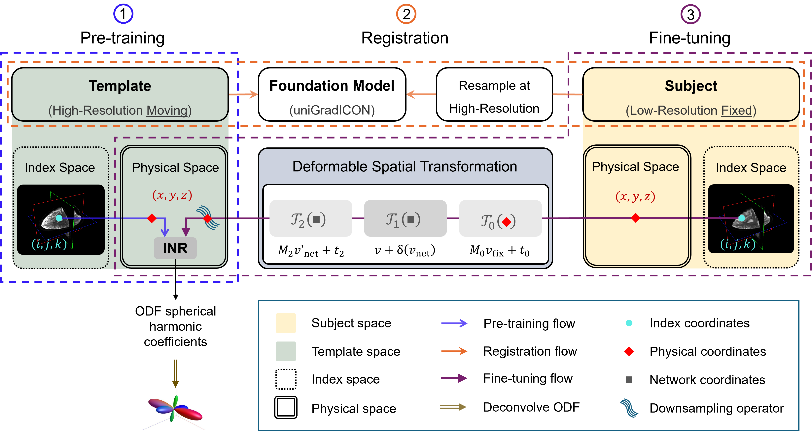
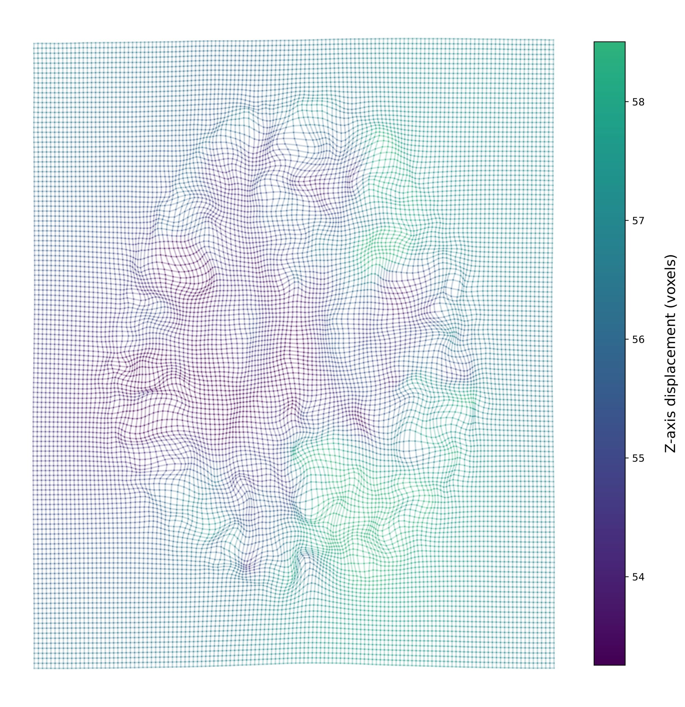
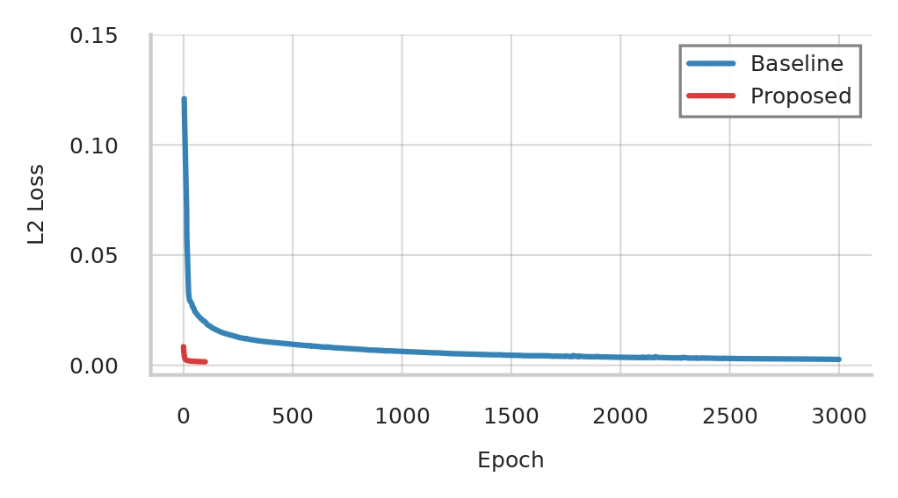
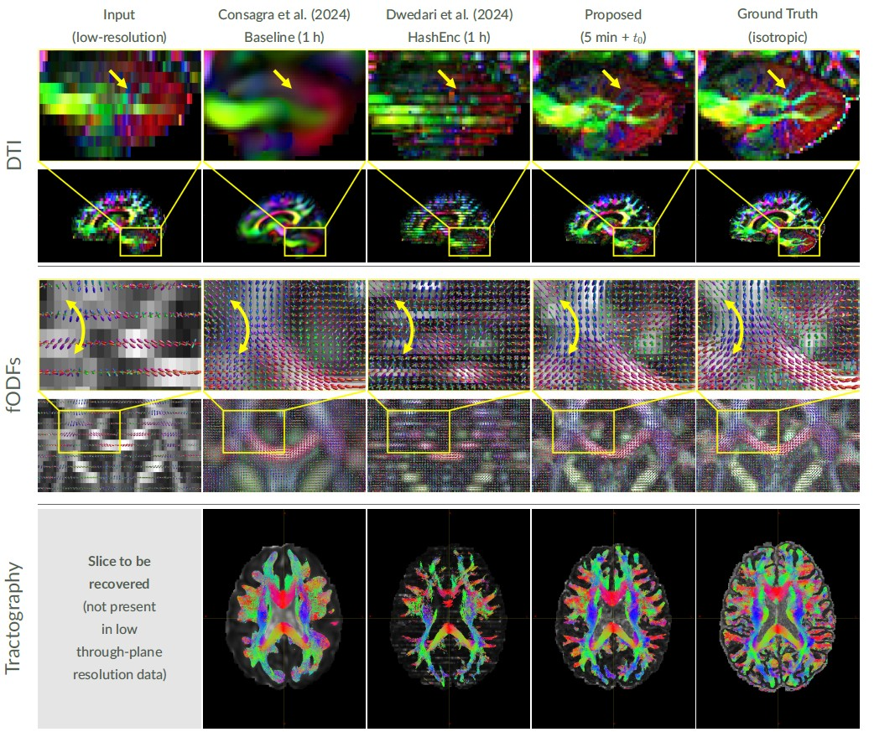
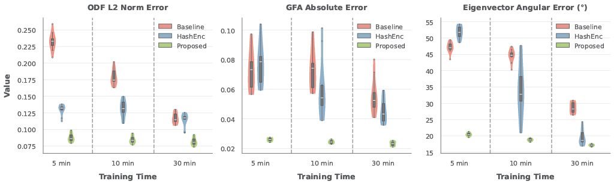
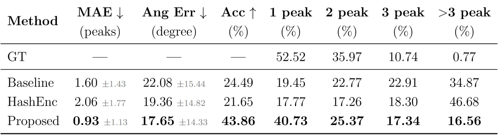
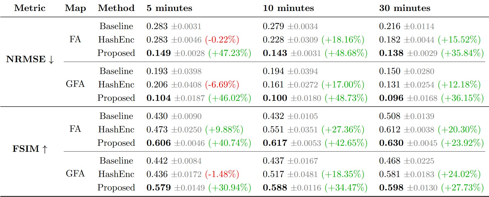

Prior-Guided Implicit Neural Representations for Single-Subject Diffusion MRI Super-Resolution
BMVC 2026
1Psychiatry Neuroimaging Laboratory, Brigham and Women's Hospital, Harvard Medical School, Boston, MA, USA
2School of Computation, Information and Technology, Technical University of Munich, Munich, Germany
3Department of Statistics, University of South Carolina, Columbia, SC, USA
Abstract
Resolving complex fiber geometries in brain white matter requires high-resolution diffusion MRI at the cost of long acquisition times. This leads many clinical protocols to opt for low-resolution scans, making downstream microstructure estimation and tractography challenging. Implicit neural representations (INRs) can model the diffusion signal continuously, enabling native single-subject super-resolution by querying the network at arbitrary spatial coordinates, yet existing methods often suffer from long training times and lack a mechanism to incorporate anatomical priors to regularize super-resolution by constraining the space of plausible reconstructions. To address these limitations, we propose a novel transfer-learning framework that pre-trains an INR on a high-resolution template and then adapts it to subject-specific scans via registration and fine-tuning. For 4× through-plane super-resolution from 5 mm to 1.25 mm on Human Connectome Project (HCP) data, our method reduces NRMSE by 36–49% and increases FSIM by 24–43% over a recent baseline with 6× faster training, outperforming competing INR-based methods across both image quality and domain-specific metrics.
Resources
News
- [November 2026] Poster presentation in Session 5 at BMVC 2026 (Lancaster, UK).
- [August 2026] Paper accepted at the British Machine Vision Conference (BMVC) 2026.
- [January 2026] Poster presented at MenaML 2026 (Thuwal, Saudi Arabia).
Method Overview

Framework overview. Three-stage framework: (1) Pre-training an INR on a high-resolution dMRI template. (2) Subject-template registration via a composite transformation T. (3) Fine-tuning to subject anatomy using low-resolution data.
Registration and Convergence

Through-plane displacement. Deformed grid of an axial slice after applying the displacement field. A regular 128×128 grid created in the fixed image space was transformed through T, resulting in curved grid lines that visualize the spatial deformation. Grid line colors encode the z-axis displacement of voxels, revealing the through-plane deformation pattern.

Training convergence comparison. Training MSE (L2) loss over epochs comparing the NODF baseline (Consagra et al., 2024; blue; 3,000 epochs) with the proposed approach initialized from a prior (red; converges within 100 epochs).
Qualitative Results

Reconstruction results and runtime. The figure shows DTI in sagittal view with zoomed cerebellar microstructure, fODFs in coronal view overlaid on GFA (with a yellow arrow indicating bundles), and tractography in axial view showing estimated streamlines for a missing slice from extremely anisotropic data. Red indicates left-right, green indicates anterior-posterior, and blue indicates superior-inferior direction. Our proposed method recovers fine details within 5 minutes, better matching the ground truth than both baselines, each trained for 1 hour.
Quantitative Comparison

Domain-specific metrics. Distribution of subject-wise median on 10 HCP subjects across three training checkpoints for ODF L2 norm error (proposed 0.08–0.09 vs. NODF baseline 0.11–0.23, HashEnc 0.12–0.13), GFA absolute error (0.023–0.026 vs. baseline/HashEnc 0.04–0.08), and eigenvector angular error (17–20° vs. baseline 28–47°, HashEnc 19–52°).

Fiber ODF Peak Count Evaluation. MAE measures peak count error. Accuracy is the percentage of voxels with an exact peak count match. Angular Error is computed only where peak counts match. Peak distribution shows the percentage of voxels predicted in each category. Values show mean ± standard deviation for MAE and Angular Error.

Quantitative comparison for FA and GFA maps across training durations on 10 HCP subjects. Our method achieves in 5 minutes what NODF (baseline) and HashEnc require 30 minutes to reach, reducing NRMSE by 36–49% and increasing FSIM by 24–43% compared to NODF. Mean ± standard deviation.
Acknowledgments
Research reported in this publication was supported by the National Institute of Neurological Disorders and Stroke, the National Institute of Mental Health, and the National Institute of Biomedical Imaging and Bioengineering of the National Institutes of Health under Award Numbers R01NS125307, R01MH132610, R01MH125860, R01EB032378, and R01MH119222. The content is solely the responsibility of the authors and does not necessarily represent the official views of the National Institutes of Health. Data were provided by the Human Connectome Project, WU-Minn Consortium (Principal Investigators: David Van Essen and Kamil Ugurbil; 1U54MH091657), funded by the 16 NIH Institutes and Centers that support the NIH Blueprint for Neuroscience Research; and by the McDonnell Center for Systems Neuroscience at Washington University.
Related Projects
Citation
@inproceedings{Ghandoura_2026_BMVC,
author = {Abdulkader Ghandoura and Marsil Zakour and William Consagra and Yogesh Rathi},
title = {Prior-Guided Implicit Neural Representations for Single-Subject Diffusion MRI Super-Resolution},
booktitle = {37th British Machine Vision Conference 2026, {BMVC} 2026, Lancaster, UK, November 23-26, 2026},
publisher = {BMVA},
year = {2026}
}